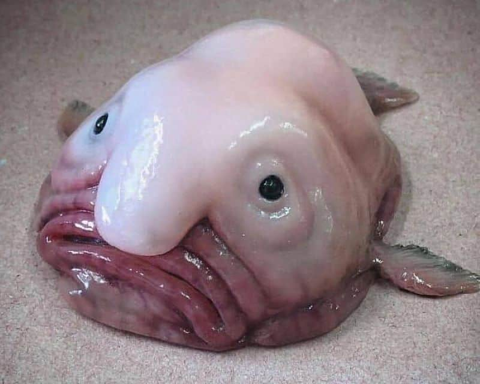

I am The Blobfish, I reside in the deep waters off the coasts of Australia and Tasmania, and have earned a reputation as the “world's ugliest animal.” I have squishy, gelatinous appearance, it appears much different when brought to the surface due to pressure changes. I can assure you I am not sexy.